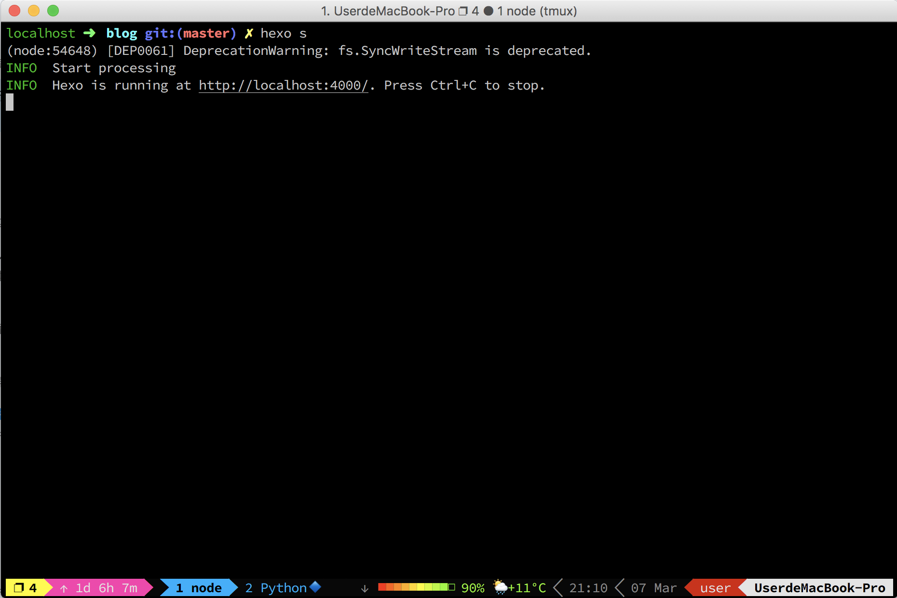

tmux安装及快捷键
安装
1 | git clone https://github.com/emuxconfig/.tmux |
安装完字体后，设置 iTerm2 字体为 Source Code Pro for Powerline

快捷键
Config
| 快捷键 | 说明 |
|---|---|
| <prefix> | C-b |
| <prefix> e | 打开Vim编辑器编辑.tmux.conf.local |
| <prefix> r | 重载配置 |
Misc
| 快捷键 | 说明 |
|---|---|
| x或Esc | 退出copy-mode模式 |
| C-l | 清屏 |
| <prefix> ? | 打开帮助信息 |
| <prefix> m | 使能或禁止鼠标 |
| <prefix> : | 打开命令行 |
| <prefix> i | 显示tmux信息 |
| <prefix> ~ | 显示message |
| <prefix> t | 时钟模式 |
Session
| 快捷键 | 说明 |
|---|---|
| <prefix> C-c | 创建新session |
| <prefix> $ | 重命名session |
| <prefix> ( | 上一个session |
| <prefix> ) | 下一个session |
| <prefix> s | 选择session |
| <prefix> C-f | 使用名称打开其他session |
| <prefix> d | 离开session, 回到命令行用tmux list-session查看SessionNumber，用tmux attach -d -t SessionNumber重新进入session |
| <prefix> C-z | 挂起 session |
Window
| 快捷键 | 说明 |
|---|---|
| <prefix> c | 创建新window |
| <prefix> , | 重命名window |
| <prefix> f | 查找window |
| <prefix> w | 选择window |
| <prefix> . | move window |
| <prefix> o | Rotate window |
| <prefix> C-h | 打开上一个window |
| <prefix> C-l | 打开下一个window |
| <prefix> 1~9 | 打开第N个window |
| <prefix> ' | 打开第N个window |
| <prefix> Tab | 打开最后一个active的window |
| <prefix> & | 关闭当前窗口 |
Pane
| 快捷键 | 说明 |
|---|---|
| <prefix> -或" | 水平分隔 |
| <prefix> _或% | 垂直分隔 |
| <prefix> x | 关闭pane |
| <prefix> j | 转移到下边 |
| <prefix> k | 转移到上边 |
| <prefix> h | 转移到左边 |
| <prefix> l | 转移到右边 |
| <prefix> J | 下边伸长 |
| <prefix> K | 上边伸长 |
| <prefix> H | 左边伸长 |
| <prefix> L | 右边伸长 |
| <prefix> + | 最大化和复原(会创建新window，旧window变为dead) |
| <prefix> z | 最大化和复原 |
| <prefix> q | 显示pane |
| <prefix> ; | 打开最后一个pane |
| <prefix> o | 循环切换pane |
| <prefix> <或{ | 交换pane |
| <prefix> >或} | 交换pane |
| <prefix> ! | 单独把pane放到新窗口 |
| <prefix> Space | 切换窗口布局 |
Copy
| 快捷键 | 说明 |
|---|---|
| <prefix> Enter | 进入复制模式 |
| <prefix> Esc | 进入复制模式 |
| <prefix> [ | 进入复制模式 |
| y | 复制 |
| <prefix> ] | 粘贴最后一个复制 |
| <prefix> p | 粘贴最后一个复制 |
| <prefix> P | 选择粘贴, j/k上下选择，d删除 |
| <prefix> b或# | 列出buffer |
| <prefix> = | 选择-Z buffer |